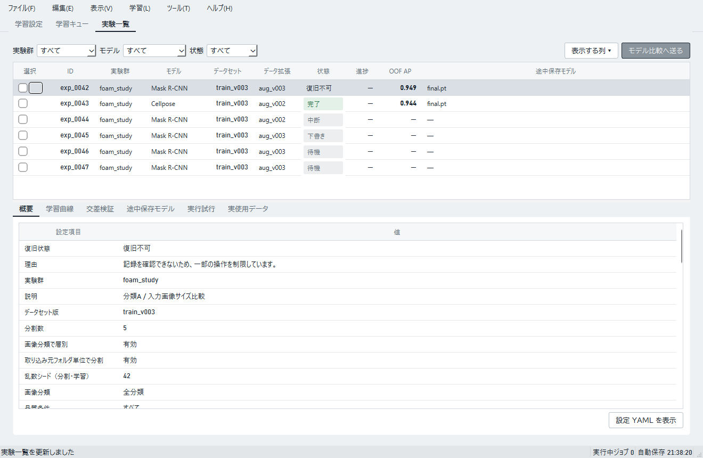

実接続の学習は中断状態や復旧情報を保存します。データ準備と推論の模擬状態は、実データの復旧対象ではありません。
起動時の警告
| 表示 | 意味と対応 |
|---|---|
| 「終了できない処理があります」 | 前回の処理に関係するプロセスの終了を確認できません。新しい学習や評価は開始できません。タスクマネージャーでアプリに関係することを確認できる該当プロセスだけを終了し、アプリを再起動します。無関係なPythonプロセスを終了しないでください。 |
| 「一部の記録を復旧できません」 | 問題のある実験記録は一覧に残り、編集や削除などの操作が保護されます。表示された理由を確認してください。 |
保護された実験
「復旧不可」や「終了未確認」の実験は、結果を閲覧できる場合があります。行を選び、詳細欄で状態と理由を確認します。結果表示が有効なら内容も確認できます。


| 対象 | 操作と対応 |
|---|---|
| 実験一覧 | 行を右クリックするか、上部の「学習」メニューを開き、「設定を引き継いで新規作成」を選びます。必須設定を読み取れない場合は不足項目が表示され、学習設定は開きません。「学習設定」で新しい設定を作り、表示された項目を入力してください。保護された実験は「複製してキューに追加」を使えません。 |
| リリース候補 | 行を右クリックするか、上部の「候補」メニューから「設定を引き継いで新規作成」を選びます。復旧不可でも元の設定を確認できる候補は、設定を引き継いだ新規作成に使えます。「終了未確認」または元の設定を確認できない候補は、学習側から設定を引き継いで新規作成するよう案内されます。その他の候補操作は理由とともに無効になります。 |
画面に表示された理由を確認し、記録ファイルを直接編集して制限を解除しないでください。
処理中にアプリを終了する
学習や評価の実行中にアプリを閉じると、処理を止めて終了するか確認されます。「はい」を選ぶと処理を中断して終了します。学習は「中断」として記録され、途中までの結果が残ります。
データを保護する
workspace内のフォルダを手で移動・削除しないでください。- 保護された行を消すために、内部の記録ファイルを編集しないでください。
- 実験自体を削除する操作と、実験記録を残したまま「成果物を整理」する操作を区別してください。